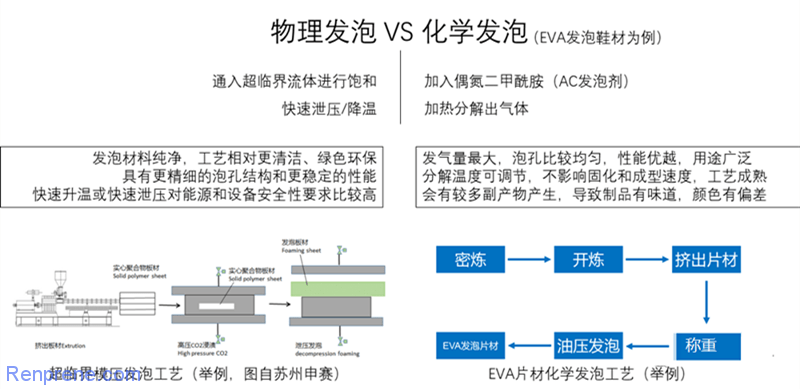
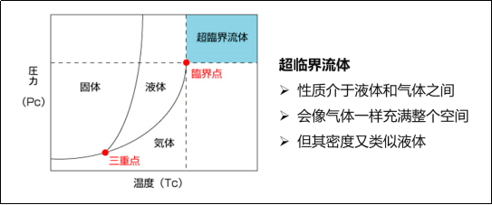

不是用的材质好性能就好，材质+工艺+调教缺一不可！
买过跑鞋的话，肯定知道跑鞋和其他物品是一样的，最高价和最低价存在着 N 倍的差距，我们有没有想过，除了缺少同样的 Logo，即便是同一个品牌下面，到底是什么决定了如此大的价格差呢？
1. 材质差异
好的跑鞋鞋底通常不会只使用一种材料，会通过技术手段融入不同的材料。
跑鞋中底并不只是一块橡胶、泡沫或者泡棉，而是一整套系列。有多个部分组成，包括大底/外底(Outsole)、中底(Midsole)和内底(Insole)。每个部分的作用都不同，大底的作用主要是防滑和耐磨，中底的作用是提供稳定性、缓冲和回弹、减少跑步时地面对足部和整个腿部的冲击，内底的作用是吸汗、快干和防菌，就是我们常说的鞋垫。
但是中底却是一个评判跑鞋质量的一个非常重要的参数，下面我们就了解一下跑鞋的 中底材质。 首先是中底材质(百年之间不断推陈出新)，主要包括：
- 基础材质 EVA
- 是一种 乙烯+醋酸乙烯酯 的高分子聚合物
- 优点是基材成本相对更低，可通过改变共聚单体比例及发泡剂进行化学发泡，也可以通过进行超临界物理发泡，获得更大的发泡倍率，所以缓震和舒适性好，但是由于加工工艺很难短时间内突破，所以回弹性上有受限。
- 基础材质 ETPU
- 是一种 发泡热塑性聚氨酯弹性体 橡胶
- 而
ETPU整体的回弹和耐用性都比EVA好，当然价格也比EVA贵。 - 由这种基材发泡而来的跑鞋中底最为熟悉就是 阿迪达斯的
BOOST(爆米花中底) - 优点不仅仅是软到感觉踩在了棉花上，而且带来的持续回弹反馈比
EVA待久的多 - 缺点是比较重，所以很少见到用其做的竞速跑鞋，多用于球鞋和休闲鞋，或和其他材质混合使用在日常训练跑鞋上。
- 基础材质 TPEE
- 与
ETPU基本差不多
- 与
- 基础材质 陶氏 OBC
- 与
ETPU基本差不多
- 与
- 基础材质 PEBA
- 尼龙弹性体
- 成本更为昂贵、加工难度更大，且成品率不高
- 优点在于回弹性能是最为强劲的中底基材，比如
NIKE的Alphafly系列和国产很多最近推出的碳板跑鞋都是采用该材质的。缺点也比较明显，就是耐用型商贸没那么好且衰减比较卡，并不适合日常训练。
其实现在五花八门的跑鞋科技，都是建立在上述几类中底材质上变着花样的玩而已。上面任何材料其实都可以和其他一种或者多种基材混合加工，成为一种新的复合材料。
2. 中底好坏
一双好的跑鞋鞋底，中底决定了其基础是否牢固。
虽然这些都是常用的指标，但是并没有一个统一的标准，完全是看最终需要调教到一个什么程度的脚感，以及自家工艺能不能达到。
回弹率(下限)
- EVA(
50%-55%) -> 改良后(60%+) -> 超临界(80%+) - ETPU(
60%) -> 超临界(88%+) (回弹性能最好的跑鞋的上限)
- EVA(
密度
邵氏硬度
衰减率
3. 发泡技术
介绍跑鞋中底的常见，发泡技术。
但是基础材质，一般硬度高、重量大、减震性能差，所以都要经过发泡后才能用作跑鞋中底。常见的发泡方式有：机械发泡、化学发泡、物理发泡。
- 化学发泡的偶氮二甲酰胺分解会残留各种副产物，导致制品有味道，颜色有偏差，碳酸氢钠复配的化学发泡剂，虽然副产物没有味道，颜色纯白，但有一定的水份，导致制品外观有缺陷，而物理发泡不存在这个问题，所以相对来说显得绿色环保，越来越多的运动鞋都用上了物理发泡工艺。

- 当下被认为能最大程度发挥出基材最强性能的加工方式就是 超临界物理发泡 方式，通过把处于超临界状态的惰性(氮气)气体注入基础材质，泄压后膨胀发泡在塑型，就连
EVA通过该技术和调校之后其表现也不输其他材质。

4. 加工工艺
一个跑鞋的好坏，和加工工艺密切相关！
各大运动品牌推出的各种跑鞋科技，并且市场上还有众多的跑鞋科技，以及更多的跑鞋种类，除了让人越来越看不懂(是不是智商税、是否性价比、是否值得购买)，和越来越贵的跑鞋价格
- 李宁靁清弹科技
- 乔丹 - PRO 回弹科技
- 安踏氪科技 - 新一代中底科技
不过尽管都采用相同的基材，由于加工方式、工艺流程的不同，也会存在很大的差距，即最终的性能存在差异。
大多数普通跑鞋都是一次性发泡而来，工艺流程简单、废品率低、成本低，比如很多号称 “真爆米花” 的运动跑鞋(ETPU)。由于价格低且基础没跟上(划不来用好技术)，所以其具备一定回弹力，上脚很难做到软弹，只能用于休闲鞋来穿。而顶级的巴斯夫爆米花大底，则效果就非常好了。
其实爆米花底也不是阿迪达斯的独有技术，很多工厂都可以制作，只是成品会有等级之分。国产的顶级爆米花底也能有真爆米花的八成脚感，价格还便宜不少。即便是最为便宜的 EVA(虽然大多数便宜跑鞋都是使用该中底)，因为加工方式、工艺流程的不同也会呈现完全不同的产品，比如 HOKA 跑鞋(CMEVA 中底；价格超贵)。
5. 性能差异
每一个特定的跑鞋价格，对应着不同的适应群体！
跑鞋中底上的各种各样的独有针对性涉及，也是决定一双跑鞋功能属性的重要因素。
- 传统跑鞋
- 针对外翻和扁平足跑者的针对性涉及 - 在足弓处采用不同密度或结构设计，来帮组抑制跑步时足弓过渡内旋，缓解超距离跑步足弓向内塌陷造成的疲劳等。
- 中底的抗扭转设计，甚至加上了稳定踝关节的一系列保护性设计，也会带来跑鞋重量的增加。
- 中底的掌根差
- 选择跑鞋时比较重要的参考因素
- 很多慢跑鞋的掌根差设计都在
0-10mm，越接近零落差越趋于自然步态，而很多高落差涉及的跑鞋更适合竞速，跑起来对小腿压力也会更大一些。很多探班竞速跑鞋的掌根差都达到了15mm。 - 而越是服务于竞速的跑鞋，越是追求轻量化，没有太多保护设计，中底也是用更为激进的滚动设计，特点就是鞋头更翘，而且中底往往内嵌碳纤维板或尼龙纤维板加持，会提供更强更大的回弹和推力。
6. 配置定位
我们选购时，需要根据自己的定位来购买适合自己的跑鞋！
材质 + 涉及 -> 慢跑
-> 竞速
-> ...
入门跑鞋 亚瑟士 CONTEND4
- 工艺：
EVA中底 + 简单发泡工艺 - 适用：休闲、短距离慢跑
- 优点：比传统
EVA中底轻 + 后跟内置GEL缓震胶
- 工艺：
入门跑鞋 HOKAONEONE 克里夫顿 8
- 工艺：
EVA(CMEVA) + 速度型滚动平衡设计 - 适用：公路跑、日常训练
- 优点：
EVA二次发泡 + 更加复杂的加工方式 + 平衡设计
- 工艺：
入门跑鞋 乔丹飞影 PB
- 工艺：
EVA(超临界物理发泡) + 全掌碳纤维板 - 适用：速度跑、专业马拉松
- 优点：
EVA(巭PRO) 、重量轻、性价比高
- 工艺：
入门跑鞋 阿迪达斯 UltraBoost
- 工艺：
EPTU(BOOST) - 适用：休闲通勤、慢跑
- 优点：真爆米花中底、很强的能量反馈
- 工艺：
标准跑鞋 索康尼菁华 13
- 工艺：上底
ETPU(PWRRUN+) +下底EVA(PWRRUN) - 适用：日常训练
- 优点：一半 EVA、一半
EPTU、重量得到控制
- 工艺：上底
标准跑鞋 乔丹风行 11 代
- 工艺：
EVA(巭PRO) +PEBA - 适用：日常训练
- 优点：超临界 EVA 发泡工艺 + PEBA 材料
- 工艺：
专业跑鞋 Nike Alphafly Next%
- 工艺：
PEBAX(ZOOMX) +AIR气垫 + 全掌碳板 - 适用：专业马拉松
- 优点：超临界发泡工艺、碳板设计
- 工艺：
专业跑鞋 李宁飞电 2.0 Elite
- 工艺：
PEBA(䨻) + 跖枕 + 全掌碳板 - 适用：专业马拉松
- 优点：超临界发泡工艺、碳板设计
- 工艺：
专业跑鞋 亚瑟士 MetaSpeed Sky
- 工艺：
PEBA(FF TURBO) + 曲线 + 全掌碳板 - 适用：专业马拉松
- 优点：超临界发泡工艺、碳板设计
- 工艺：
专业跑鞋 特步 160X 系列
- 工艺：
PEBA(动力巢FB) + 滚动 + 全掌碳板 - 适用：专业马拉松
- 优点：超临界发泡工艺、碳板设计
- 工艺：
专业跑鞋 361 度飞飚
- 工艺：
PEBA(QU!KFLAME) + 分块 + 全掌碳板 - 适用：专业马拉松
- 优点：超临界发泡工艺、碳板设计
- 工艺：
7. 推荐跑鞋
根据自己实际情况，购买就可以了，不要为了贵而贵！
低价位区间的跑鞋，也许你加 100 块钱预算就能够获得各方面有质的提升的鞋款，但是在高价位段，你加 500 块买来的那一双也不一定适合自己，所以如何利用最划算的价格买到最适合自己的跑鞋也得花点心思。
- 100 元价位跑鞋推荐
- 300 元价位跑鞋推荐
- 500 元价位跑鞋推荐
- 800 元价位跑鞋推荐
- 1000 元价位跑鞋推荐
8. 选购建议
根据自己实际情况，购买就可以了，不要为了贵而贵！
如果你选择最便宜的跑鞋，想想自己能否介绍这个下限呢？如果可以，那么完全没有问题。
贵的跑鞋往往都采用了更好地中底材质、最新的跑鞋技术、以及更好地保护设计，对跑步目的加成也是更到位的，拥有更高的性能下限。相较而言，便宜的跑鞋材料和工艺的成本更低，性能尤其上限。这样的比较是有一个限制条件的，那就是同类型的跑鞋才有可比性。
而且跑鞋最主要的就是功能属性，即为了某个目的而设计的，有的适合慢跑、有的适合竞速、有的适合休闲穿着，所以选购的时候需要更加自身的实际需求去选择适合自己的跑鞋。
而且每个人的身体情况不用，即便是同样一双鞋，每个的穿着感受也是不同的。所以，并不是更贵的跑鞋就适合自己，也不是更贵的跑鞋就能够更好地保护你的脚。
如果只是以健身为目的、且身体不重，很多 EVA 中底的跑鞋可能更加适合自己。如果是在场地跑步的话，一两百的鞋子也是适用的。如果身体较重(IMB>25%)就应该缓震更好、价格稍贵一些且保护设计更好一点的次顶级或顶级跑鞋更为适合你。
而且现在已经有一些国产运动品牌的跑鞋，能做到国际品牌对应顶级鞋款的 80%-90% 的性能了，而且只需要其 50%-70% 的价格，完全可以平替过渡，性价比非常高。
9. 参考链接
送人玫瑰，手有余香！